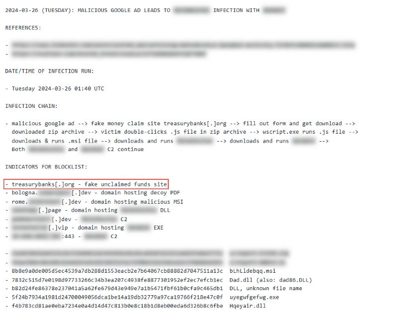
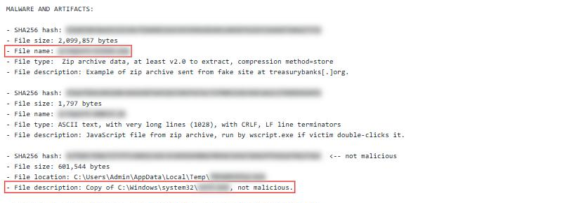
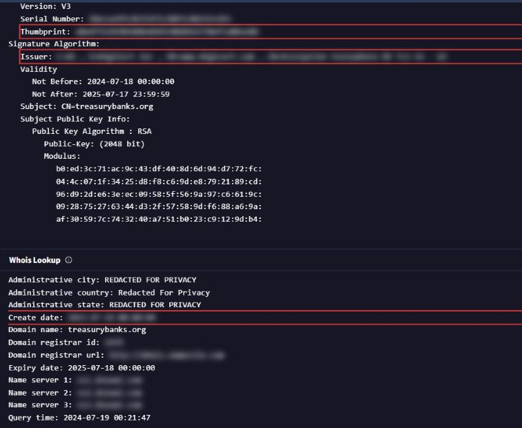

MBuchus
- Lab: MBuchus trên CyberDefenders. Nhóm Threat Intel, độ khó Medium, đã retired.
- Dữ liệu: kịch bản của lab và tên miền
treasurybanks.org(tên miền này có sẵn trong kịch bản, không phải đáp án). Không có file log hay mẫu mã độc để tải về. Toàn bộ bài làm dựa trên nguồn công khai. - Công cụ: VirusTotal, crt.sh, ViewDNSInfo, ipinfo.io, ARIN WHOIS, AlienVault OTX, Malpedia và các báo cáo threat intel công khai.
- Quy ước:
- Bài không ghi giá trị đáp án. Chỗ nào cần tra cứu có dòng "Hướng giải" chỉ nơi tìm.
- Ảnh chụp từ các nguồn công khai. Khung đỏ là chỗ cần chú ý, vùng làm mờ là giá trị trùng với đáp án hoặc để lộ đáp án.
Tóm tắt kết quả
- Tháng 3/2024, nhân viên một công ty tư vấn đầu tư tìm công cụ "khôi phục tài chính" trên mạng. Sau đó máy chậm và hiện pop-up lạ. Log mạng nội bộ có nhiều kết nối tới
treasurybanks.org. - Nạn nhân bị dẫn tới trang web giả bằng quảng cáo độc hại (malvertising, tức chèn mã độc hoặc link độc vào quảng cáo trực tuyến).
- Trang "lấy lại tiền" cho tải một file ZIP. Trong ZIP là một file JavaScript, chạy bằng trình thông dịch script của Windows khi nạn nhân bấm đúp.
- Script chép một công cụ dòng lệnh hợp lệ của Windows vào thư mục Temp dưới tên ngẫu nhiên, rồi dùng nó tải payload giai đoạn sau.
- Payload thuộc một họ mã độc dạng Malware-as-a-Service, được bán cho nhiều nhóm tấn công khác nhau.
- Hạ tầng tên miền dùng chứng chỉ TLS hợp lệ, có nhiều tên miền phụ trong cùng chứng chỉ. Lịch sử IP cho thấy tên miền từng đổi hạ tầng.
Bước 1: xác định cách dụ nạn nhân
- Mục tiêu: biết nạn nhân đến trang giả bằng cách nào.
- Cách làm: đọc kịch bản và mục tiêu của lab, đối chiếu với báo cáo công khai về chiến dịch.
- Nhận định:
- Nạn nhân tìm kiếm công cụ tài chính rồi gặp quảng cáo dẫn tới trang giả. Đây là malvertising: quảng cáo đi qua mạng quảng cáo hợp lệ hoặc vị trí quảng cáo bị chiếm, rồi chuyển hướng người dùng tới trang độc hại.
Bước 2: tìm file nạn nhân tải về
- Mục tiêu: xác định file ZIP mà trang "khôi phục tiền" bắt nạn nhân tải.
- Cách làm: dùng báo cáo của Palo Alto Networks Unit 42 về chiến dịch này. Unit 42 đăng danh sách IOC (dấu hiệu nhận biết xâm nhập) dạng file text trong repo GitHub
Unit42-timely-threat-intel, file ngày 26/03/2024.

- Nhận định:
- File IOC liệt kê file ZIP tải từ trang giả và file JavaScript bên trong ZIP, kèm SHA-256 và kích thước.
- Hướng giải: tên file ZIP nằm trong danh sách IOC của Unit 42 nêu trên.
Bước 3: xác định họ mã độc và chức năng
- Mục tiêu: biết payload trong ZIP thuộc họ nào và dùng để làm gì.
- Cách làm: lấy tên họ mã độc từ báo cáo Unit 42, rồi tra trang của họ đó trên Malpedia.
- Nhận định:
- Họ mã độc này được bán dạng dịch vụ (MaaS). Vì vậy payload đi kèm và mục đích của người thuê có thể khác nhau giữa các chiến dịch.
- Malpedia ghi nhận họ này từng được dùng nhắm vào trường đại học, trường trung học ở Mỹ và một công ty công nghệ cao ở Bỉ.
- Hướng giải: loại mã độc (theo chức năng) được ghi ở phần mô tả trên trang Malpedia của họ này.
- Hướng giải: tên họ mã độc có trong tiêu đề file IOC của Unit 42 và trên trang Malpedia tương ứng. Tên lab cũng là gợi ý.
Bước 4: công cụ hợp lệ bị lạm dụng trong Temp
- Mục tiêu: tìm công cụ dòng lệnh hợp lệ mà chuỗi lây nhiễm chép vào Temp.
- Cách làm: đọc phần mô tả file trong danh sách IOC của Unit 42. Phần này có hai mục cần so sánh: file JavaScript trong ZIP và một file
.exetên ngẫu nhiên trongC:\Users\<user>\AppData\Local\Temp.
- File name: <tên file .js trong ZIP>
- File description: JavaScript file from zip archive, run by wscript.exe ...
- File location: C:\Users\Admin\AppData\Local\Temp\<tên ngẫu nhiên>.exe
- File description: Copy of C:\Windows\system32\<công cụ dòng lệnh>, not malicious.

- Nhận định:
- File trong Temp là bản sao của một công cụ có sẵn trong
System32, được đổi tên ngẫu nhiên. Bản thân file không độc hại. Kẻ tấn công dùng nó để tải payload tiếp theo, giống cách dùngwget. - Dùng binary đáng tin cậy giúp hoạt động tải file lẫn vào hoạt động bình thường.
- Hướng giải: tên công cụ gốc nằm ở dòng "File description" của file
.exetrong Temp. - Lab không có log endpoint. Chuỗi ZIP, JavaScript và file trong Temp lấy từ báo cáo Unit 42, chưa đủ dữ liệu để xác nhận trên máy của công ty trong kịch bản.
Bước 5: chứng chỉ TLS của tên miền
- Mục tiêu: lấy SHA-256 fingerprint của chứng chỉ TLS dùng cho
treasurybanks.orgvà tên miền phụ, cùng tên CA (tổ chức cấp chứng chỉ). - Cách làm:
- Tìm
treasurybanks.orgtrên crt.sh (kho nhật ký Certificate Transparency, nơi lưu công khai mọi chứng chỉ đã cấp). - Chọn bản ghi chứng chỉ "cha" có danh sách Subject Alternative Name (SAN, các tên miền phụ cùng dùng một chứng chỉ).
- Mở bản ghi đó, đọc trường SHA-256 và trường Issuer.
- Nhận định:
- Các tên miền trong chiến dịch dùng chứng chỉ hợp lệ do một CA thương mại cấp. Điều này làm trang giả trông đáng tin hơn với nạn nhân.
- Danh sách SAN là điểm xoay (pivot) tốt: từ một chứng chỉ có thể tìm ra các tên miền khác của cùng nhóm.
- Hướng giải: fingerprint và tên CA nằm trên trang chi tiết của bản ghi crt.sh có danh sách SAN.
Bước 6: ngày đăng ký và nhà đăng ký tên miền
- Mục tiêu: biết tên miền được đăng ký khi nào và qua nhà đăng ký (registrar) nào.
- Cách làm:
- Mở
treasurybanks.orgtrên VirusTotal, xem mục Whois để lấy ngày đăng ký. - Dùng ViewDNSInfo để xem lịch sử IP, rồi tra WHOIS (ví dụ
search.arin.net) để xác nhận chủ sở hữu IP và registrar. - Nhận định:
- Ngày đăng ký cũ hơn thời điểm chiến dịch vài tháng. Tên miền được chuẩn bị trước khi dùng.
- Hướng giải: ngày đăng ký ở mục Whois trên VirusTotal. Registrar có trong bản ghi WHOIS.

Bước 7: nhà cung cấp hạ tầng và ASN
- Mục tiêu: xác định nhà cung cấp cloud đang host IP của site và ASN (số hiệu mạng tự trị, định danh nhà mạng sở hữu dải IP) của IP cũ trước đó.
- Cách làm:
- Lấy IP từ dữ liệu phân giải của tên miền, tra trên
ipinfo.iođể biết nhà cung cấp. - Dùng ViewDNSInfo (IP history) để tìm IP cũ hơn, rồi tra IP đó trên
ipinfo.iođể lấy ASN. - Nhận định:
- Tên miền từng đổi hạ tầng. IP cũ và ASN cũ giúp liên kết với các hoạt động trước đó của nhóm khi săn tìm theo lịch sử.
- Hướng giải: nhà cung cấp hiện tại và ASN cũ đọc trên
ipinfo.iosau khi lấy IP từ ViewDNSInfo.
Bước 8: tên miền có chủ đề thiên văn
- Mục tiêu: tìm một tên miền khác của kẻ tấn công, tên gợi tới chủ đề thiên văn, trỏ tới trang đăng nhập thiết bị mạng thay vì trang lừa đảo.
- Cách làm:
- Đọc bài phân tích dùng chứng chỉ TLS làm threat intel trên blog
embeeresearch.io. Bài này nêu tên miền đó. - Tra lịch sử DNS của tên miền, xem chủ sở hữu IP đầu tiên được ghi nhận năm 2011.
- Nhận định:
- Tên miền này khác các tên miền lừa đảo còn lại về nội dung trả về, nhưng vẫn liên kết được qua chứng chỉ.
- Hướng giải: chủ sở hữu IP đầu tiên nằm ở bản ghi sớm nhất trong lịch sử IP của tên miền.